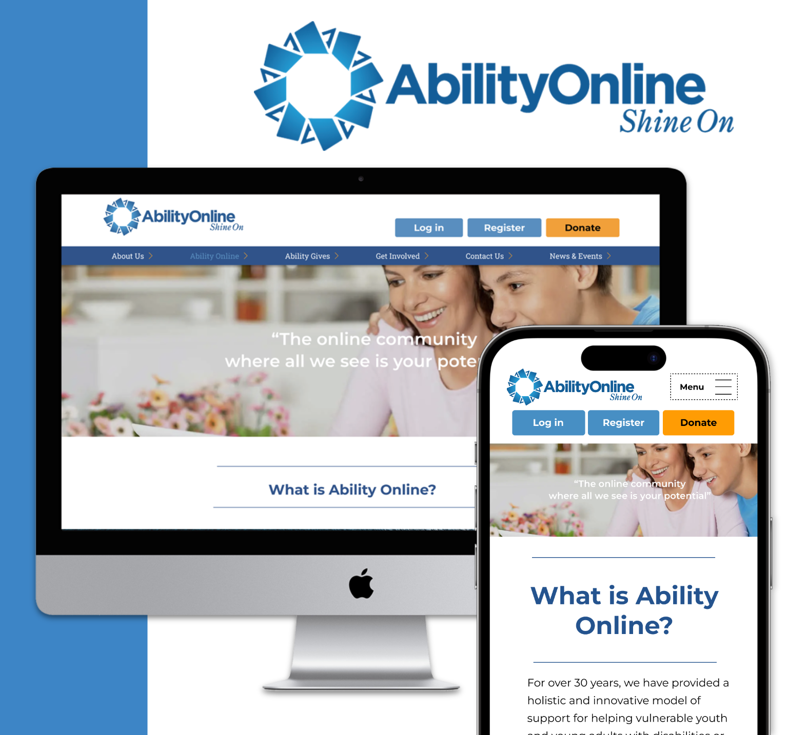

WORK

View
An online community primarily for youth and children who share challenges associated with disabilities. As user researchers, we improve the website so that users can find more trust and reliability donating to the organization, and be more inclined to establish a connection with AbilityOnline.
We notice that there’s no apps centered around dietary restrictions based on medical issues that can be filtered by multiple medical issues. Therefore, we design an app that helps managing diet based on medical conditions and ethnicity.